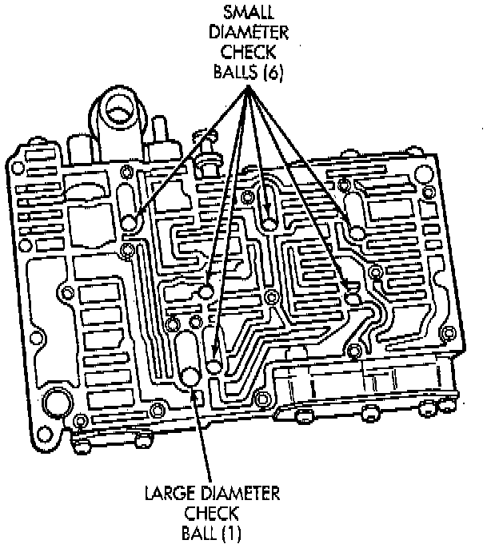
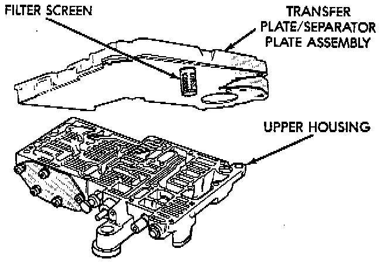
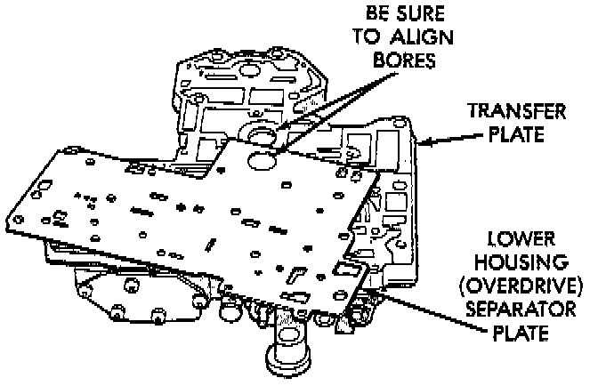
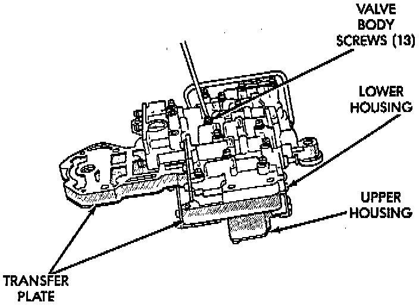

Upper and Lower Housing Assembly

1. Position upper housing so internal passages and check ball seats are facing upward. Then install check balls in housing. Seven check balls are used. The single large check ball is approximately 8.7 mm (11/32 inch) diameter. The remaining 6 check balls are approximately 6.3 mm (1/4 inch) in diameter.

2. Position assembled transfer plate and upper housing separator plate on upper housing. Be sure filter screen is seated in proper housing recess.

3. Position lower housing separator plate on transfer plate.

4. Install lower housing on assembled transfer plate and upper housing.
5. Install and start all valve body screws by hand except for the screws to hold the boost valve tube brace. Save those screws for later installation. Then tighten screws evenly to 4 Nm (35 inch lbs.) torque. Start at center and work out to sides when tightening screws.